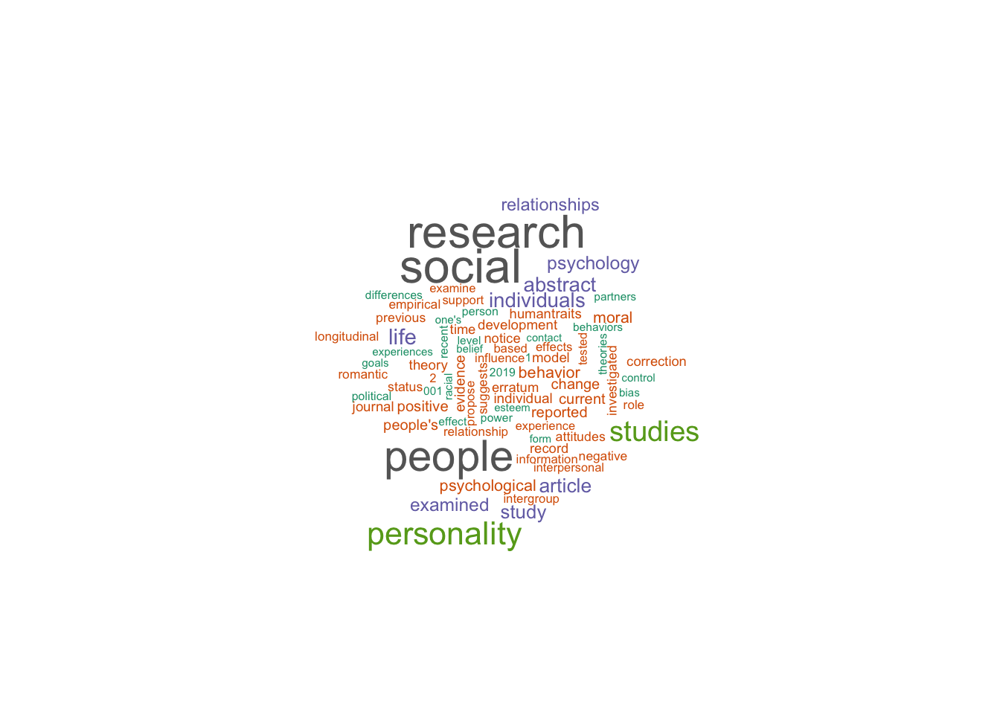
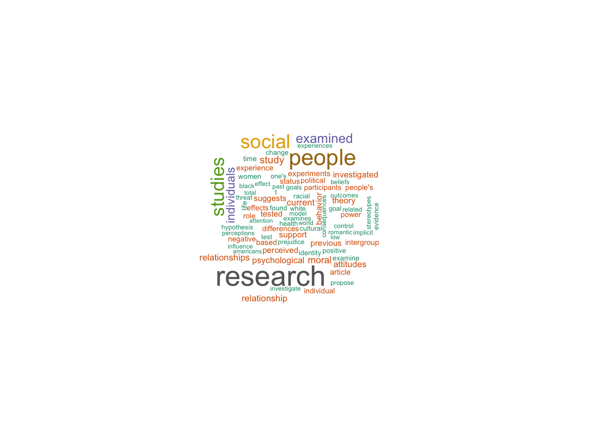
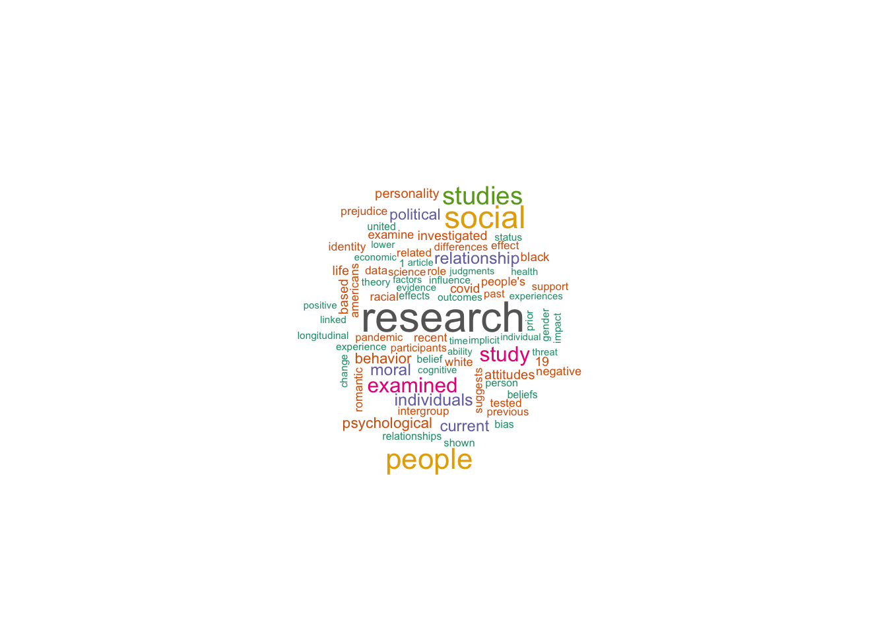
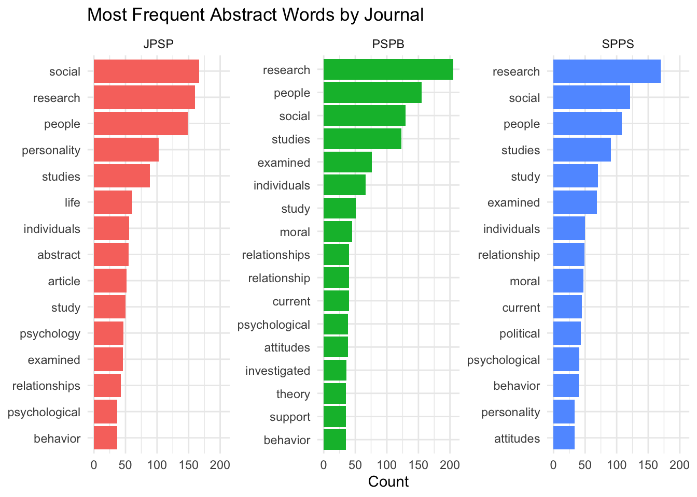

The focus of this document is to compare word clouds between the three journals.
Let’s first load the data.
How many rows actually have abstracts?
sum(!is.na(combined$Abstract))## [1] 2198We have 2198 available abstracts.
Split each word in an abrstract into one row per word.
words <- combined %>%
filter(!is.na(Abstract)) %>%
select(Journal, Abstract) %>%
unnest_tokens(word, Abstract)We now have 57320 rows (i.e., words)!
Here is where I realized that the abstracts were truncated. So, these are not full abstracts, possibly because of publish & perish limitations.
There’s this dataset from the tidytext package that contains common words like “the”, “and”, “is” etc. We can use anti_join to remove those words, since they aren’t of interest for our word cloud.
words <- words %>%
anti_join(stop_words, by = "word")There are now 30230 number of words remaining.
Here are the top words:
words %>%
count(word, sort = TRUE) %>%
head(20)## # A tibble: 20 × 2
## word n
## <chr> <int>
## 1 research 535
## 2 social 418
## 3 people 412
## 4 studies 303
## 5 examined 191
## 6 individuals 172
## 7 study 171
## 8 personality 152
## 9 moral 128
## 10 life 118
## 11 current 117
## 12 psychological 116
## 13 behavior 112
## 14 relationship 112
## 15 relationships 103
## 16 article 98
## 17 attitudes 96
## 18 investigated 93
## 19 political 89
## 20 people's 87First, let’s do JPSP:
jpsp_freq <- words %>%
filter(Journal == "JPSP") %>%
count(word, sort = TRUE) %>%
head(80)
wordcloud(
words = jpsp_freq$word,
freq = jpsp_freq$n,
max.words = 80,
scale = c(2, 0.3),
colors = brewer.pal(8, "Dark2")
)
Next, let’s do PSPB:
pspb_freq <- words %>%
filter(Journal == "PSPB") %>%
count(word, sort = TRUE) %>%
head(80)
wordcloud(
words = pspb_freq$word,
freq = pspb_freq$n,
max.words = 80,
scale = c(2, 0.3),
colors = brewer.pal(8, "Dark2")
)
Lastly, SPPS:
spps_freq <- words %>%
filter(Journal == "SPPS") %>%
count(word, sort = TRUE) %>%
head(80)
wordcloud(
words = spps_freq$word,
freq = spps_freq$n,
max.words = 80,
scale = c(2, 0.3),
colors = brewer.pal(8, "Dark2")
)
It isn’t actually very clear from those word clouds. They look similar. Let’s try another format:
top_words <- words %>%
count(Journal, word, sort = TRUE) %>%
group_by(Journal) %>%
slice_max(n, n = 15) %>%
ungroup() %>%
mutate(word_ordered = reorder_within(word, n, Journal))
ggplot(top_words, aes(x = word_ordered, y = n, fill = Journal)) +
geom_col(show.legend = FALSE) +
coord_flip() +
facet_wrap(~ Journal, scales = "free_y") +
scale_x_reordered() +
labs(x = NULL, y = "Count", title = "Most Frequent Abstract Words by Journal") +
theme_minimal()
JPSP interestingly mentions “social” more than the other two journals, but also “personality”! “Relationship” consistently showed up on all three, which I assume is mostly the statistical kind of “relationship” rather than human relationships. The other words are mostly ones that are expected to appear within all kinds of research (e.g., studies/study, individuals, etc.).